专题02 线段与角中的八大经典模型（举一反三专项训练）
【北师大版2024】

【模型1 线段上的动点求时间问题】 1
【模型2 线段上的动点定值问题】 2
【模型3 几何图形中动角定值问题】 3
【模型4 几何图形中动角数量关系问题】 4
【模型5 几何图形中动角求运动时间问题】 5
【模型6 几何图形中动角求角度问题】 7
【模型7 线段与角中动态多解问题】 9
【模型8 线段与角中动态新定义问题】 10

模型1：单中点模型
类型 | 单中点模型 | |
条件 | C为AB的中点 | C为AB 上一点，D为BC 的中点 |
图示 |
|
|
结论 | AC=BC= 12AB，AB=2AC=2BC | AD= 12(AC+AB)，AB+AC=2AD |


【模型1 单中点模型】
【例1】（25-26七年级上·全国·单元测试）如图，点C在线段AB的延长线上，BC=2AB，点D是线段AC的中点，AB=2cm，则BD的长度是（ ）

A．3cm B．2.5cm C．1.5cm D．1cm
【变式1-1】（24-25七年级上·四川眉山·期末）如图，点C、D是线段AB上的两点，若点D为BC的中点，且AC:BD=1:2，AB=10，则AD的长是（ ）

A．5 B．6 C．7 D．8
【变式1-2】（24-25七年级上·河南郑州·期末）如图，AD=16cm，点C为线段AD上一点，点B为CD的中点，BD=4cm．若点E在直线AD上，且AE=6cm，则BE的长为（ ）
A．6cm B．9cm或3cm C．18cm或9cm D．18cm或6cm
【变式1-3】已知点C是线段AB上的点，AC=13AB，D是直线CB上一点，点E是DB的中点，若CE=4，AD=23AB，则线段AB的长为 ．
模型2：相邻双中点模型
类型 | 相邻双中点模型 | |
条件 | C为AB上一点，E，F分别为AC，BC 的中点 | C为AB上一点，E，F分别为AB,BC 的中点 |
图示 |
|
|
结论 | EF= 12AB | EF= 12AC |


【模型2 相邻双中点模型】
【例2】已知M、N、F是线段AB上的点，且FN=10，若点M是线段AB的中点， MN=13AB，F是线段AN的中点，则线段AB的长是 ．

【变式2-1】（24-25六年级上·上海·阶段练习）一条直线上依次有A、 B、C、D四个点，如果AC+BD=15cm，BC=3 cm，M和N分别是AC和CD的中点，那么MN= cm；
【变式2-2】（24-25六年级下·山东烟台·期末）已知点A、B、C在同一直线上，若AB=10cm，AC=18cm，点E，F分别是线段AB、AC中点，则线段EF的长是 ．
【变式2-3】（24-25七年级上·河南开封·阶段练习）如图，点A，B，C在同一直线上，H为AC的中点，M为AB的中点，N为BC的中点．下列结论中错误的是（ ）

A．MN=HC B．MN=12AC+HB
C．MH=12AH−HB D．HN=12HC+HB
模型3：相间双中点模型
类型 | 相间双中点模型 | |
条件 | E，F分别为AC，DB的中点 | |
图示 | 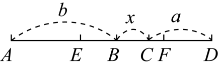 | 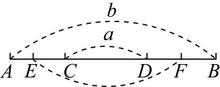 |
结论 | EF= 12(AB+CD)= 12(a+b) | |
【模型3 相间双中点模型】
【例3】（24-25七年级上·山东青岛·期末）如图，AB:BC:CD=2:3:4，AB的中点M与CD的中点N的距离是3cm，则BC= ．

【变式3-1】如图，延长线段AB至C使BC=2AB，延长线段BA至D使AD=3AB，点E是线段DB的中点，点F是线段AC的中点，若AB=6cm，则EF的长度为（ ）

A．15cm B．16cm C．18cm D．20cm
【变式3-2】（24-25七年级上·陕西安康·阶段练习）如图，B, C是线段AD上的任意两点，M是AB的中点，N是CD的中点．若MN=a, BC=b，则AD的长是（ ）
A．2a−b B．2a C．2b+a D．2a−2b
【变式3-3】（24-25七年级上·山东临沂·期末）七年级同学正在举办“线段联欢会”，小明同学出示的节目是：如图，点C为线段AB上一点，AC−BC=6，M是线段AC中点，AM=8，N为线段MB的中点，则CN=（ ）

A．2 B．1 C．1.5 D．3
模型4：半角模型
类型 | 半角模型 |
条件 | ∠AOC=α,∠BOC=β(α>β)，∠EOF=α+β2 |
图示 | 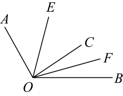 |
结论 | ∠AOE+∠BOF=α+β2，∠AOE－∠COF=α−β2 |
【模型4 半角模型】
【例4】如图①所示，∠AOB=120°，将直角三角板的直角顶点放置在O点，OC平分∠AON．

(1)若∠COM=35°，则∠AOM=______，∠BON=______．
(2)如果∠COM=α，∠BON=β，试判断α，β的数量关系，并说明理由．
(3)如图②当直角三角板绕着O点顺时针旋转一定角度，使得OM在∠AOC的内部，ON在∠BOC的外部，若∠COM=α，∠BON=β，α，β是否还存在（2）中的数量关系，若存在，请说明理由，若不存在，请求出α，β的数量关系．
【变式4-1】如图，已知∠AOB=90°，射线OC绕点O从OA位置开始，以每秒4°的速度顺时针旋转；同时，射线OD绕点O从OB位置开始，以每秒1°的速度逆时针旋转，当OC与OA成180°角时，OC与OD同时停止旋转． 秒后，OC与OD的夹角是30°．
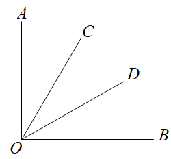
【变式4-2】如图，若∠AOB=m°，∠AOM=n°，∠BOC=4∠BON，OM平分∠CON，则∠MON= °（用含m，n的代数式表示）．
【变式4-3】如图，在平面内的五条射线OA、OB、OC、OD、OE中，射线OB、OC、OD是逆时针方向排列，∠AOB=2∠COD=2θ0°<θ<90°，射线OE平分∠AOC．
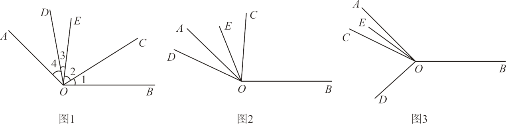
(1)当射线OC、OD都在∠AOB内部，且θ=72°时，如图1．
①若∠DOE=20°，则∠BOC=______°；
②若射线OD平分∠AOE，则∠DOE=______°；
(2)当射线OC、OD分别在∠AOB内、外部时，如图2，求证：∠BOC=2∠DOE；
(3)当射线OC、OD都在∠AOB外部时，如图3，若∠AOD=∠AOB，则∠BOC=______（用含θ的式子表示）．
模型5：角叠角模型
类型 | 角叠角模型 |
条件 | ∠AOC=α，∠BOD=β |
图示 |
|
结论 | ∠AOB+∠COD=α+β |

【模型5 角叠角模型】
【例5】（24-25七年级上·甘肃武威·期末）已知：如图1，OB、OC分别为锐角∠AOD内部的两条动射线，当OB、OC运动到如图的位置时，∠AOC+∠BOD=100°，∠AOB+∠COD=40°，
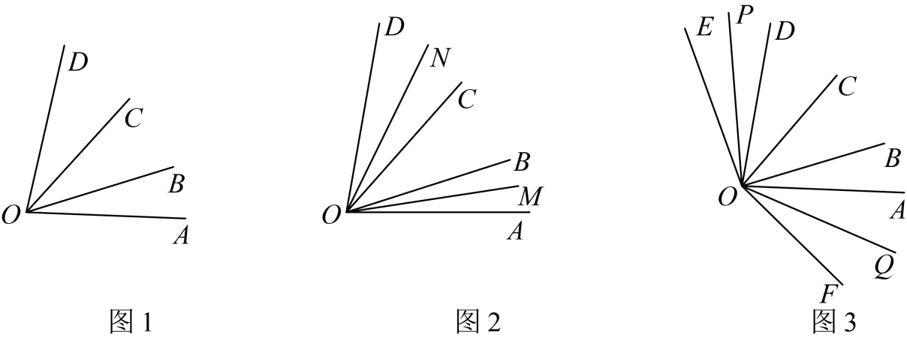
(1)求∠BOC的度数；
(2)如图2，射线OM、ON分别为∠AOB、∠COD的平分线，求∠MON的度数．
(3)如图3，若OE、OF是∠AOD外部的两条射线，且∠EOB=∠COF=90°，OP平分∠EOD，OQ平分∠AOF，当∠BOC绕着点O旋转时，∠POQ的大小是否会发生变化，若不变，求出其度数，若变化，说明理由．
【变式5-1】已知∠AOB=∠COD，射线OC在∠AOB的内部，按要求完成下列各小题．
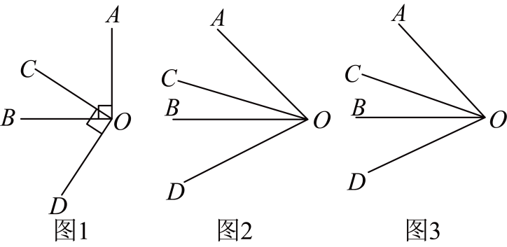
(1)尝试探究：如图1，已知∠AOB=90°，∠AOD+∠BOC的度数为________°；
(2)初步应用：如图2，若∠AOB=45°时，求∠AOD+∠BOC的度数，并说明理由；
(3)拓展提升：如图3，若∠AOB=α0°<α<180°，试判断∠AOD+∠BOC与α之间的数量关系，并说明理由．
【变式5-2】（24-25七年级上·福建莆田·期末）如图，将一副三角尺的两个锐角（45°角和60°角）的顶点叠放在一起，没有重叠的部分分别记作∠1和∠2，若∠1=23°，则∠2的度数为 ．

【变式5-3】如图，一副三角尺AOB与COD的直角顶点O重合在一起．

(1)∠AOD+∠BOC=_____________；
(2)试判断∠AOC与∠BOD的大小关系，并说明理由；
(3)若∠AOD=4∠BOC，OE为∠BOC的平分线，求∠AOD，∠DOE，∠AOE的度数．
模型6：角夹角模型
类型 | 角夹角模型 |
条件 | ∠AOC=n∠EOC，∠BOD=n∠DOF |
图示 |
|
结论 | ∠EOF＝1n[∠AOB+(n-1)∠COD] |

【模型6 角夹角模型】
【例6】新定义：如果∠MON的内部有一条射线OP将∠MON分成的两个角，其中一个角是另一个角的n倍，那么我们称射线OP为∠MON的n倍分线，例如，如图1，∠MOP=4∠NOP，则OP为∠MON的4倍分线．
(1)应用：若∠AOB=60°，OP为∠AOB的二倍分线，且∠BOP>∠POA，则∠BOP= ．
(2)如图2，点A，O，B在同一条直线上，OC为直线AB上方的一条射线
①若OP，OQ分别为∠AOC和∠BOC的三倍分线（∠COP>∠POA，∠COQ>∠QOB），已知∠AOC=120°，则∠POQ= ．
②在①的条件下，若∠AOC=α，∠POQ的度数是否发生变化？请说明理由．
【变式6-1】如图，OC平分∠AOB，OD、OE三等分∠AOB，已知∠COE=15°，求∠AOB的度数．
【变式6-2】如图，点A，O，B在一条直线上，∠AOC=3∠COD，OE平分∠BOD．

(1)若∠COD=10°，求∠AOC的余角的度数；
(2)若∠AOC=45°，求∠COE的度数．
【变式6-3】【问题背景】已知OC是∠AOB内部的一条射线，且∠AOB=3∠AOC．

【问题再现】（1）如图1，若∠AOB=120°，OM平分∠AOC，ON平分∠AOB．求∠MON的度数；
【问题推广】（2）如图2，∠AOB=90°，从点O出发在∠BOC内引射线OD，满足∠BOC−∠AOC=∠COD．若OM平分∠COD．求∠BOM的度数；
【拓展提升】（3）如图3，在∠AOC的内部作射线OP，在∠BOC的内部作射线OQ．若∠COP：∠BOQ=1：2；求∠AOP和∠COQ的数量关系．
模型7：单角平分线模型
类型 | 单角平分线模型 | |
条件 | 射线OC在∠AOB内，OM平分∠BOC | |
图示 | 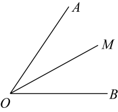 | 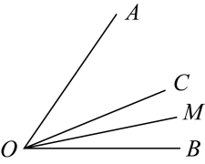 |
结论 | ∠AOM=∠BOM= 12∠AOB | ∠AOB+∠AOC=2∠AOM |
【模型7 单角平分线模型】
【例7】如图，∠AOC与∠BOC的度数比为4:2，OD平分∠AOB，若∠COD=10°，则∠AOB的度数是 ．
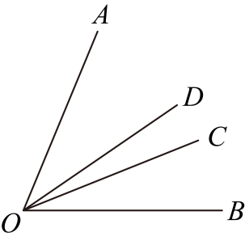
【变式7-1】如图所示，已知O是直线AB上一点，∠AOC=48°，OD平分∠BOC，则∠BOD的度数是（ ）
A．64° B．66° C．68° D．72°
【变式7-2】（24-25七年级上·甘肃定西·期末）如图，已知O是直线AC上一点，OB是一条射线，OD平分∠AOB，OE在∠BOC内，2∠BOE=∠EOC，∠DOE=70°，∠EOC= ．

【变式7-3】（25-26八年级上·上海长宁·阶段练习）如图，已知∠AOB=120°，在平面内取一点C，满足∠AOC=α°（120<α<180），以OC为边作等边△COD（OD在OC的逆时针60°方向上），作OM平分∠BOC，∠DOM的度数是 °．（用含α的代数式表示）

模型8：双角平分线模型
类型 | 双角平分线和型 | 双角平分线差型 |
条件 | OC是∠AOB内的一条射线，OP1，OP2分别是∠AOC，∠BOC的平分线 | OC是∠AOB外的一条射线，OP1，OP2分别是∠AOC，∠BOC的平分线 |
图示 | 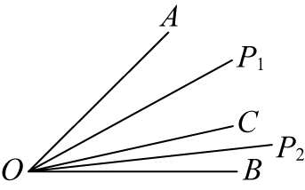 |
|
结论 | ∠P1OP2=12∠AOB | |

【模型8 双角平分线模型】
【例8】（25-26七年级上·全国·单元测试）如图，有一副三角板△ABC和△ADE，它们的斜边AB和AD按图1所示摆放在直线MN上，∠BAC=30°，∠DAE=45°，已知AP平分∠CAD，AQ平分∠CAE．

(1)求初始位置∠PAE的度数．
(2)若将三角板ADE绕点A转到如图2位置，使∠DAN=α，且0°<α<45°，求∠PAQ的度数．
(3)在（2）的基础上，若继续将三角板ABC绕点A转动到图3位置，使∠MAB=23α，求∠PAD与∠BAN存在的等量关系．
【变式8-1】（25-26七年级上·河北石家庄·期中）如图，在∠AOC中，∠AOB是直角，∠BOC=70∘，射线OE平分∠AOC，射线OF平分∠BOC，则∠EOF的度数为 ．

【变式8-2】（24-25七年级上·陕西西安·期末）如图，在∠AOC中，射线OE平分∠AOC，连接OB，射线OF平分∠BOC．

(1)若∠AOB是直角，∠BOC=70°，求∠EOF的度数；
(2)若∠AOC+∠EOF=170°，∠BOC=80°，则∠COE是多少度？
【变式8-3】如图1，将一副直角三角尺的顶点叠在一起放在点O处，∠BOA=90°，∠COD=60°，OC与OB重合，OD在∠AOB外，射线OM、ON分别是∠AOC、∠BOD的角平分线
(1)求∠MON的度数；
(2)如图2，若保持三角尺AOB不动，三角尺COD绕点O逆时针旋转n°（0<n<90°且n≠60°）时，其他条件不变，求∠MON的度数；
(3)直接写出∠COD绕点O逆时针旋转n°（0<n<360°且n≠90°,n≠60°）时∠MON的值；
(4)在旋转的过程中，当∠AOC+∠BOD=120°时，直接写出∠BOC的值．